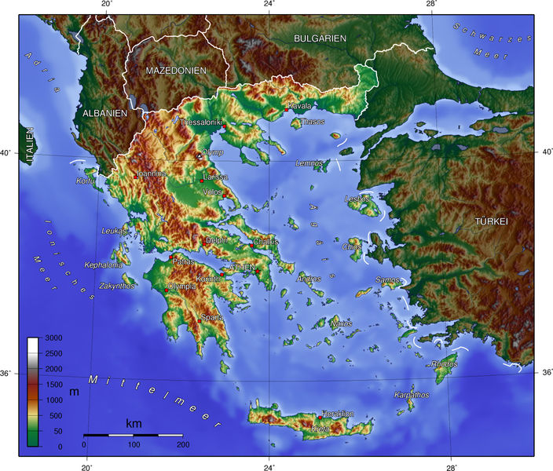
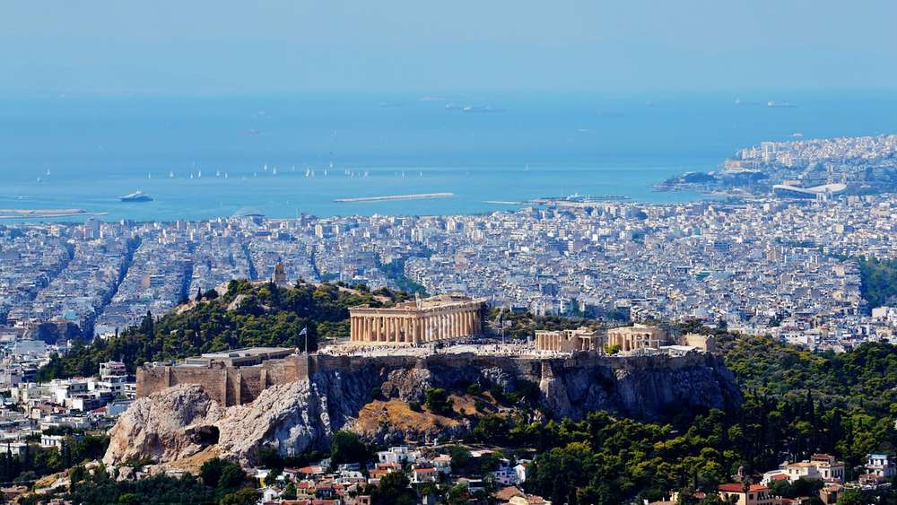

Griechenland
Das Land der 3.000 Inseln

Topografie

Griechenland! Bestehend fast ausschließlich aus Gebirge und vielen kleinen Inseln.
Besiedlung und Bevölkerung

Eine große Metropole und viele "kleinere" Städte
Wirtschaft

Wirtschaft verliert immer mehr Einfluss